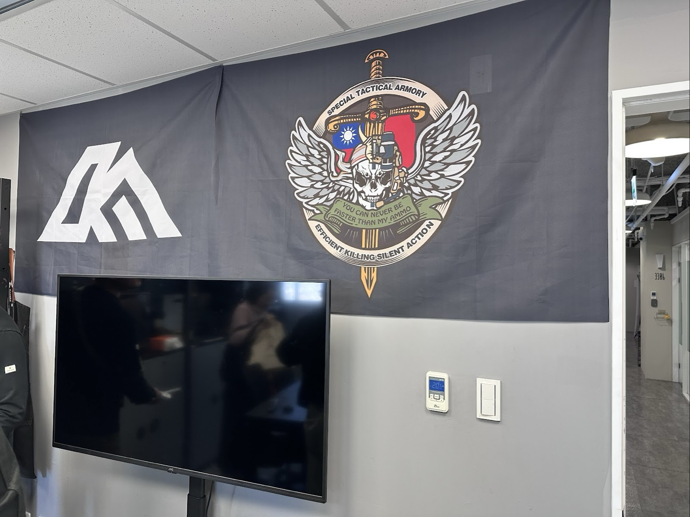

S.T.A
高默防衛
為了深入了解民間防衛的行動面貌，我們團隊專訪了由退役人員組成的「高默 (S.T.A)」。
他們讓我們看見了行動力與危機感知的訓練初衷。
組織初衷：建立危機感知，為社會買一份「保險」
高默（S.T.A）是由台灣退役特戰成員組成的民間訓練團體。在我們的訪談中，教官點出一個關鍵：「台灣人幾乎都經歷過颱風、地震等自然災害，但極少人具備應對複合型極端危機的『臨場感知』。」面對網路上「推廣民防是在製造恐慌」的質疑，創辦人語重心長地向我們比喻：「這就像幫小孩買保險，不是在挑戰死神；做健康檢查，也不是在挑釁病菌。」
追求平安不能只靠口號，提升自身的應變實力，才是面對未知風險的最佳解答。三年來，高默成功帶領跨性別、跨背景的平民克服體能限制，建立起「保護自己、伸出援手」的基礎能力。
運作模式：從單點突破到系統化教育
高默的訓練與其他單位相比，更強調「精緻化」。教官向我們分享，這三年來，課程從最初每個月一兩次，發展到現在幾乎每週都有課。他們設計了嚴謹的 Level 分級訓練，從單項技術到整體考核，讓學生在循序漸進中獲得成就感。
此外，學員結訓後會形成緊密的支援小組，大家私下甚至會交流睡袋、背包等二手裝備。這種強大的社群凝聚力，讓有志於防災的人不再感到孤單，也破除了外界對於民防團體是「激進好戰分子」的誤解。

社群連結：與地方共榮的智慧
作為扎根地方的社群團體，高默極度重視行動的「合法性」與「在地連結」。
在訪談中我們得知一個生動的幕後故事：為了不讓拿著訓練器材的學員嚇到一般民眾，每次演習前，高默都會與當地村里長及警察單位充分溝通。「剛好我外公以前是那邊的村長，有地緣關係。」創辦人笑著說。更棒的是，高默的訓練活動成功帶動了當地的露營區及住宿業發展。
這種「民防帶動地方產業」的共生模式，不僅讓在地居民從陌生轉為支持，更吸引了許多軍警消人員利用休假以平民身分來進修精進。

未來展望：走進社區，內化「不驚慌」的社會文化
高默的終極願景是將防災觀念深植人心。教官在受訪時生動地比喻：「民防的終極目標就是建立『不要驚慌』的觀念。就像飛機出狀況，你不能尖叫，要聽從空服員指揮；也不能像疫情期間，發燒 39 度就全衝急診，造成醫療資源浪費。」
透過持續的專業推廣，高默期許讓每位公民在天災或緊急狀況發生時，都能具備判斷輕重緩急的能力。學會配合政府專業部門，在自救的同時也成為社會穩定的力量。
這份展望不只是技術傳承，更是對社會責任的承諾，致力於讓每一位民眾都成為強化社會安全防護網中，最堅實且理性的後盾。